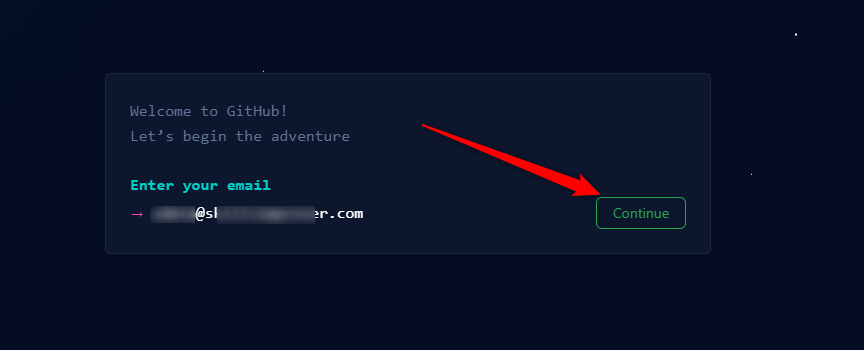

Тезисы:
- Гитхаб – это не просто сайт
- На гитхабе вы не регистрируетесь между делом в метро, чтобы получить промокод
- Гитхаб – это сайт, где вы покажете свой код!
- Гитхаб – это ваша главная социальная сеть
- Гитхаб – это ваша будущая карьера!
- Поэтому – «Не нанимай на это дело идиотов!» (большой куш в видео)
- Поэтому подберите ваш настоящий рабочий email и введите его (не забудь создать упражнение, как нормально создать email)
Подумай, как еще побрызгать пафосом...
НЕ ЗАБУДЬ СОЗДАТЬ ОТДЕЛЬНОЕ УПРАЖНЕНИЕ В КУРСЕ ДЛЯ САМЫХ МАЛЕНЬКИХ, КАК ПРАВИЛЬНО ПОДОБРАТЬ СЕБЕ EMAIL!
И в результате, когда вы определились, какая же у вас по-настоящему рабочая почта, смело водите ее в поле и жмите кнопку «Continue»:
